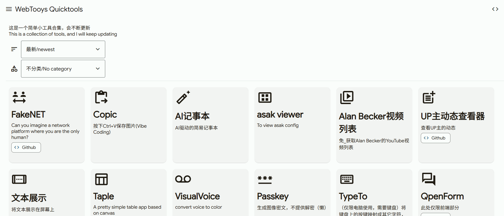
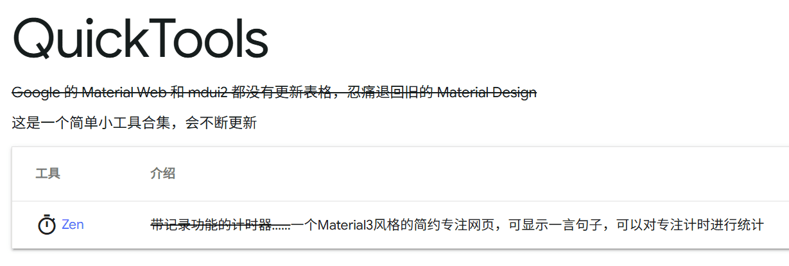
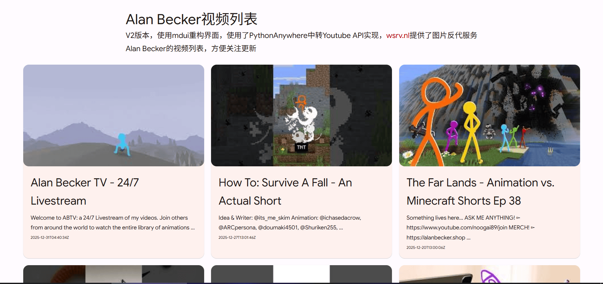
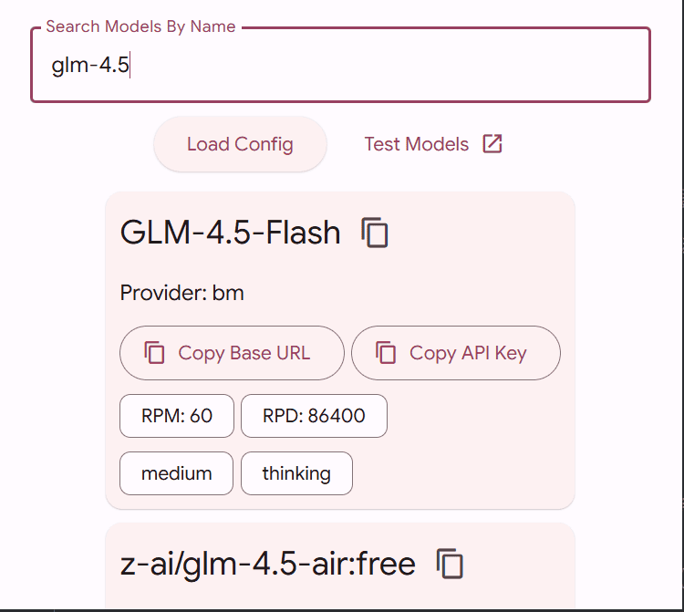
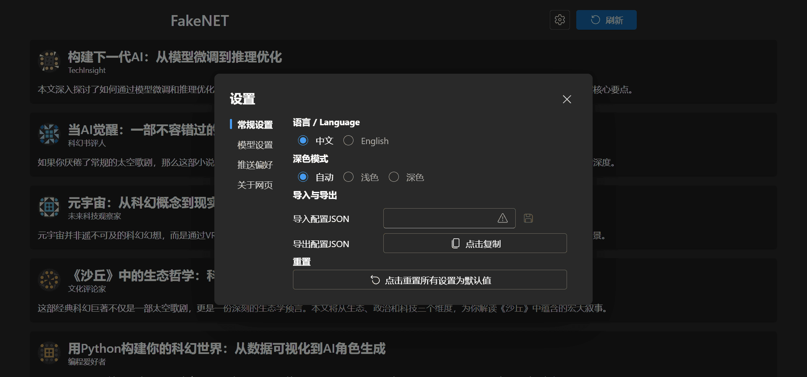
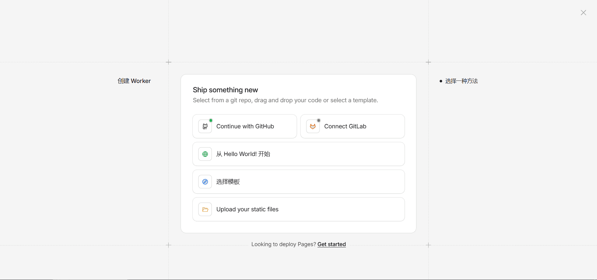
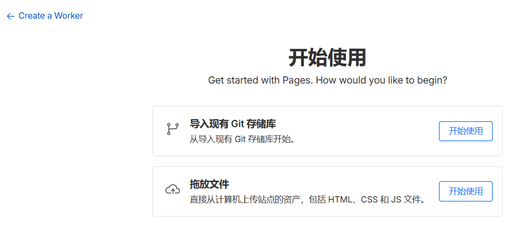

首页链接
开始之前，先放链接
随着改名（一会会提到），链接有一点变动，但也顺便增加了一些域名，哪个都行
- Vercel
- Cloudflare Pages
- Netlify tooys.netlify.app
增加了Cloudflare Pages，更改了netlify和vercel的域名（旧的也能访问，会重定向）
前言
长文警告！纯手打不易！一定要看到后面！后面更重要
距离上次写它的博客已经10个月左右（300多天）了
（看了一眼博客，上一篇是2025.2.22）
所以这次我想在开始之前先聊一聊，聊点东西
这次的重点是最后一个哦~请耐心看完~
关于这个东西
WebTooys（Quicktools）这个东西，算是我前端学习路上的一个记录了，从我初学前端的TODO到现在的React，直接的说就是我的成长历程
可以看到，我刚学没多久就解除了Web Component组件库了，这也深深影响着我
我对它的定义是，一个纯前端静态网页工具集，不需要打包构建的那种，不过后面这一祖宗之法从现在开始……动摇了，后面你就知道了
它还会继续更新的！
关于第__弹
每到发博客的时候，都会写上第几弹这样的东西
其实对于项目本身来说并不存在这种说法，这只是博客的说法罢了
每到一个大项目（开了单独的Github仓库的）我就会发一弹
由于上次值更新了两个项目，就不+1了，+0.1了（其实一开始是+0.5的，但是我后来改了）
改名
这次有一个很大的变动——改名！
Quicktools -> WebTooys
原因
原本这个名字是我随便取的，简单易懂
可正是因为如此，重名率101.0000% × 114514啊
我刚刚在bing搜了一下，第一页quicktools.*域名的就有4个，其他的也都是写着自己是Quicktools的
我觉得，这不行！我要一个新的名字
我回想了一下，所谓Tools——工具，我做到了吗？最初我是这么想的，但是它逐渐变了
它现在还是有着不少Tools的，但是也有不少Toys，实用性几乎没有，娱乐性倒是有
我一拍脑袋！就叫Tooys吧！融合了这两个单词，玩具工具都是具
感觉有点简单，稍微补一下
所以新的名字就是：
WebTooys
可是啊，我看了我还是放不下Quicktools这个称呼，也懒得改Github仓库名，这一改我还得跑到Netlify和Vercel那边去……
所以，全称就叫做WebTooys Quicktools，简称Tooys / WT
以前还简称QT呢
Netlify域名
前面说了，改了名也改了域名
Vercel好改，允许多个域名*.vercel.app同时存在（我设置了301重定向），可是Netlify就不行了
我想改，但是改不了，改了旧的就没了，可我最常用的就是旧的Netlify域名啊，一改就失效了
那就……
创建一个新的叫做ftz-tools的项目！
我直接利用Netlify Drop上传这个东西（Github Gist）
这里有一个netlify.toml，直接301重定向到新站
可是Drop要求我必须要有一个index.html，那我就快速写了一个多重自动重定向的网页（其实应该够不着这一步的）（用了http-equiv="refresh" 和 window.location.href和<a>）
完美解决！
AI
以前在这个项目中使用AI要么是AI辅助开发、要么是直接vibe，但是就是没有AI为中心的
现在有了
前面的项目
开始说第三弹之前，我想说说第二弹和第2.1弹的两个大项目
Taple
这是我写了一个学期的玩意，那时还没有双休（现在也没有）
写完之后还有不少修修补补，增加了AI功能，增加了缩放功能，算是我坚持最久的一个项目了吧
UpDyn
一个批量查看B站UP主动态的工具，但是没过多久这个破站的风控加强了
用不了了！最后当我找到一个能用的第三方库的时候，我本地能跑通，部署到服务器上就寄了，大概是因为服务器在国外吧
总之——蒙古上单.jpg（█ ███████）
首页重构
其实发了上一弹博客没多久，我就重构界面了
最初的版本长这样：（用的是mdui1组件库）（翻git第一次提交翻出来的）

其实mdui2的表格不作为一个组件存在
material web进维护模式好几年了你怎么还不活啊
为啥新版本涟漪不放到Material 3官方文档上（mdui遵循官方文档用的是旧涟漪）
后来我觉得太丑了，于是用mdui2的卡片重做了一个简单的网页，没有js，增加项目直接改html就行了
（图片自己翻）
而在新的版本，长的差不多，但其实是重构了的，我使用js生成组件的方式显示项目
为了方便管理，我把项目配置独立到了link.js里面，不用links.json的原因是我不想要页面加载完了之后还得等fetch，同时也不用被json严格的格式困扰
这么做的好处就是，我可以添加筛选分类排序功能了！
此外藏了一个小彩蛋（不要作弊哦，看源码全都看光光了，我可没藏多深，不看源码往这恶彩蛋才有意思）
sitemap和umami
我想让它上Bing Webmaster和Google Search Console，所以我需要一个sitemap，一开始我想要写一个脚本直接生成的，后来想了一下，换成手写了，这样可控性高
然后也添加了umami，分享链接
介绍
已经写了好多字
该开始写每个项目的介绍了~
按时间顺序来吧
AB追更器
我从小学就开始追更Alan Becker的动画了，几年以来技术一直在提升，一度期盼更新，可惜现在生活上有着各种事情，逐渐地在意得少了，当初的热情也消退了许多，但这并不妨碍我依旧热爱
没看过的赶紧给我去看
我学前端之前，我用python做了一个用PythonAnywhere+Flask+API的查看视频列表的网页，还用的是MDBootstrap
而我光速重写了
现在那个网页已经变成api转发了，现在是用mdui做的界面，请求PythonAnywhere后端，这样不用工具也能看
图片用了wsrv.nl反代Youtube图片，国内网络可以访问
直播和首播都会被算进视频列表API的，所以不用担心看不上首播/直播了

关于旧的那个，看我以前的一篇博客
asak viewer
就我自己而言，作用不怎么大
不过我通过这种方式扩展了asak.json的作用

把自己的各种llm api收集起来，导入到viewer里面，就能够搜索和复制了，方便快速选取自己的多个api多个模型
同时还提供了一个测试api的功能，直接把参数填进去就能测试这个api这个key这个模型是否可用，只要没有CORS
其他没什么好说的，过
AI记事本
但是我想谈谈我的想法，我直接引用帖子里的话吧
原本就是想这样做一个记事本的，想着这样打字都不用考虑选词了，一顿狂敲ai自动帮我整理好，输入法什么的都免了
想象很美好现实很骨感
等以后小模型进步了，输出又快又好，这玩意绝对好用（
平常打字的时候，时不时会遇上打错字（拼音同音字），一旦打字打快了打爽了一不小心就漏掉了，说不定你能在这篇文章里面找到一点点错别字，那么我们可以从输入法动手，直接ai纠错，这就是我的想法
当然，技术还不够成熟
后面我会写一篇博客，专门来写我的一些想法，或是完成不了，或是我没技术，或是世界的技术还不够，或是我没时间写，或是我后来又觉得不行……
Copic
你只需要按下PrtSc键把截图复制到剪贴板，然后打开这个网页按下ctrl+v，图片就保存了
这个网页不依赖任何第三方资源，你可以按ctrl+s把这单个html保存下来离线使用，我是用GLM-4.6临时搓的，顺手放上去了
其实我自己并不需要用这个东西，我之前写的LifeLog电脑端就顺手集成了截图功能，其实我是在整大活，短时间内可能没能整得完，留个悬念
你跟截图过不去了是吧？之前写的第一个elecron应用CapsTools第一个集成的就是截图
FakeNET
重点来了！压轴项目！
访问链接（一会解释）
/builts/fakenet/index.html/builts/fakenet/index_jd.html/builts/fakenet/index_jdm.html
简单介绍一下吧
这个在Github README已经写了很多，再结合视频，我觉得我不需要讲什么了
先说一下，虽然我提到了Sora，但是其实这个想法的产生是在Sora2发布之前的，在我被另一个项目的bug硬控到柳暗花明又一柳暗花明的时候Sora2发布了，当我放弃了那个项目之后我才开始制作这个东西
简单地说，这个东西就是让你填入CloseAI格式的API，然后得到一个 伪 · 文 章 平 台
由AI生成文章推送，点击文章之后会由AI生成文章内容，等文章内容生成完毕之后生成评论，当你下一次点击刷新按钮的时候，AI会先根据你看没看过的文章、点不点赞文章评论来分析，修改你的偏好列表，这个偏好列表会应用到全部请求
我觉得效果不算好，可能是模型的原因，也可能是提示词的原因，不过你可以改系统提示词，只要AI输出一样，如果可以的话，有没有大佬贡献一个更好的提示词
界面用了Fluent UI React Component，好看吧，这是WebTooys(Quicktools)第一次上需要构建的项目，祖宗之法可变！后面还会有别的

开发历程
按照惯例，讲一讲开发历程吧，分享一下开发过程中的一些事情
久久久
开发这玩意用了我两个多月，靠着每周单休去写的，期间还有几次游戏更新，再加上每周各种各样的事，少的一周就写了大概半小时……
其实大部分时间都在写UI，逻辑不难
砍砍砍
一开始构想的时候，我想这是一个虚假的社交网络平台，分成三个分区：
- 现在你看到的文章分区
- 类似于推特的帖文分区
- 类似于小红书的图文分区
而且一开始我的构想还有个用AI给内容生成图片的环节，这些我都懒得搞了
本来想要在模型配置里面做一个全局模型，然没每个模型配置可以选择是否使用全局模型，配置的时候会省事一点，但是开发起来略微有点复杂我懒得搞
bun
开始做之前刷到了bun这个玩意，感觉有点意思，那这次就用bun写一下吧
感觉比vite省事了一点点，但不多，不过我主管觉得它打包速度挺快的
当然，我这里没有用到后端，下次玩玩bun的哪些后端api
提示词的引用方式
写了一堆提示词，一开始我用md文件存起来然后尝试用require引入这些文件的
但是bun在开发服务器里面得到的是_bun/xxx这样子的字符串，没把它当成文本，它也不支持require('xxx?raw')(直接报错)，这至少对我调试很不利
我放弃了，于是创建了一个文件
export default {
"zh-CN": {
title: `...`,
//...
},
"en": {
//...
}
};
直接解决，但是太不优雅了
没过多久，AppStore代码泄露，我在tg找到了源码观摩观摩，用的是Svelte，呃……我没玩过……
但是我发现有一点！我想要打开svg文件看看，结果预览不了，切换到文本查看我就恍然大悟了
export default "data:image/svg+xml,%3csvg%20viewBox='0%200%2070.76...ntColor'%3e%3c/path%3e%3c/svg%3e"
你给我干哪来了？这还是svg吗
于是我就修改了一下，一个ts文件一个提示词，每个文件都是module.export.default = ...
我可不会干这种在md文件写js的神秘事情
i18n
我想，这次玩一下语言切换吧，使用react-i18n
可是我在编辑器没有提示没有预览有点难受，然后我找到了i18n-ally这个VSCode插件，挺好用的
最后用AI把zh-CN.json翻译成了en.json
但是在写的过程中，其实很多地方都用了三目运算符去处理，尤其是拼接用户提示词的时候
那我为什么不都用三目运算符呢，反正是react处理起来也省事
state深度
我React写的不多，就犯了一个错误：一个组件的state更改之后用了useEffect把state同步到另一个组件的state，这样就触发了state深度限制，React直接崩掉
Markdown 方案更改
一开始写Markdown显示的部分我是用了我之前写的一个水项目LMCanvas里面的代码的，还使用了styled component注入css（整个项目没创建过一个css文件，因为我不想）
但是这个玩意似乎不够好，想了想算了，换了一个方案，支持更丰富的Markdown语法，让AI更能够发挥富文本能力，那就是——GFM(GitHub Flavored Markdown)
import 'github-markdown-css/github-markdown.css';
//...
<ReactMarkdown
remarkPlugins={[remarkGfm, remarkMath]}
rehypePlugins={[[rehypeKatex, { throwOnError: false }]]}
components={components}
>
但是这个背景色和文本颜色不符，其实很简单就能解决：{backgroundColor: 'transparent',color: 'inherit',}
顺手还加上了Katex和react-syntax-highlighter(vscDarkPlus主题)
九分甚至有十分完善地显示了Markdown
CVE
就在我做着做着，突然！CVE-2025-55182和CVE-2025-55182两个10级的漏洞掉了下来
但其实我这个纯前端项目应该不受什么影响的，再怎么样顶多让Vercel抗一下，但我还是升级了，安心一点
闭包
一直以来闭包相关的事情我都是凭直觉写的，顶多怀疑一下也不会出什么错，但是写React就得注意一下，这个State跟我的直觉不太一样，得稍加注意一下
这次我偷偷利用了一下闭包，拿没刷新的闭包旧值和用useEffectEvent拿到的新值进行比较
结果因为太快了组件没刷新有的情况下useEffectEvent拿到的也是旧值
部署cf pages
cf更新了新的ui，点击创建一看就不一样了

我直接点击了Continue with Github，一路过去，失败了，提示构建失败
欸？我这样一不用构建啊怎么就失败了
我回来这个界面看了一下”创建Worker“？，左边怎么就只有Worker没有Pages这选项啊
再看看右边”选择一种方法“？这啥？
说实话这个界面挺好看的，但是我看了半天我才看到面板下面有一个小小的"Looking to deploy Pages? Get started"
我寻思着这上一个界面叫Workers 和 Pages，这两玩意算是同级了吧，怎么Pages按钮塞这么小，欺负我眼瞎？
点了一下，马上回到了旧ui，体验有点割裂

不过也是顺利创建了CF Pages版本的部署
我的有点大，你要忍一下
由于使用了React和Highlightjs，构建后的js文件高达2.13 MB
其实有CF Pages在我完全不用担心带宽问题
Netlify和Vercel各100GB也不用担心好吧大哥
其实根本没那么多人访问这个破站
但是我想出了一个馊主意——jsDeliver
这服务好哇，能狗直接拿Github上面的文件使用cdn引入
简单改一下就是index_jd.html和index_jdm.html了
何意味
尾声
不知道说什么，希望大家多多支持，我后面还会写的
不知不觉怎么写了怎么多字啊